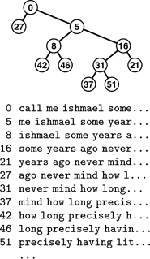

C++ Programming Robert Sedgewick - Princeton University Addison Wesley Professional Algorithms in C++, Parts 1–4: Fundamentals, Data Structure, Sorting, Searching, Third Edition
12.7. Index Implementations with Symbol Tables
For many applications we want a search structure simply to help us find items, without moving them around. For example, we might have an array of items with keys, and we might want the search method to give us the index into that array of the item matching a certain key. Or we might want to remove the item with a given index from the search structure, but still keep it in the array for some other use. In Section 9.6, we considered the advantages of processing index items in priority queues, referring to data in a client array indirectly. For symbol tables, the same concept leads to the familiar index: a search structure external to a set of items that provides quick access to items with a given key. In Chapter 16, we shall consider the case where the items and perhaps even the index are in external storage; in this section, we briefly consider the case when both the items and the index fit in memory.
We can adapt binary search trees to build indices in precisely the same manner as we provided indirection for sorting in Section 6.8 and for heaps in Section 9.6: use an Index wrapper to define items for the BST, and arrange for keys to be extracted from items via the key member function, as usual. Moreover, we can use parallel arrays for the links, as we did for linked lists in Chapter 3. We use three arrays, one each for the items, left links, and right links. The links are array indices (integers), and we replace link references such as
in all our code with array references such as
This approach avoids the cost of dynamic memory allocation for each node—the items occupy an array without regard to the search function, and we preallocate two integers per item to hold the tree links, recognizing that we will need at least this amount of space when all the items are in the search structure. The space for the links is not always in use, but it is there for use by the search routine without any time overhead for allocation. Another important feature of this approach is that it allows extra arrays (extra information associated with each node) to be added without the tree-manipulation code being changed at all. When the search routine returns the index for an item, it gives a way to access immediately all the information associated with that item, by using the index to access an appropriate array.
This way of implementing BSTs to aid in searching large arrays of items is sometimes useful, because it avoids the extra expense of copying items into the internal representation of the ADT, and the overhead of allocation and construction by new. The use of arrays is not appropriate when space is at a premium and the symbol table grows and shrinks markedly, particularly if it is difficult to estimate the maximum size of the symbol table in advance. If no accurate size prediction is possible, unused links might waste space in the item array.
An important application of the indexing concept is to provide keyword searching in a string of text (see Figure 12.11). Program 12.11 is an example of such an application. It reads a text string from an external file. Then, considering each position in the text string to define a string key starting at that position and going to the end of the string, it inserts all the keys into a symbol table, using string pointers. This use of string keys differs from a string-item type definition such as the one in Exercise 12.2 because no storage allocation is involved. The string keys that we use are arbitrarily long, but we maintain only the pointers to them and we look at only enough characters to decide which of two strings should appear first. No two strings are equal (for example, they are all of different lengths), but if we modify == to consider two strings to be equal if one is a prefix of the other, we can use the symbol table to find whether a given query string is in the text, simply by calling search.
In this example of a string index, we define a string key to begin with each word in a text; then, we build a BST, accessing the keys with their string index. The keys are arbitrarily long in principle, but only a few leading characters are generally examined, in practice. For example, to find out whether the phrase never mind appears in this text, we compare with call... at the root (string index 0), then me... at the right child of the root (index 5), then some... at the right child of that node (index 16), then we find never mind on the left of that node (index 31).

Program 12.11. Example of indexing a text string|
This program assumes that Item.cxx defines a char* data representation for string keys in items, an overloaded operator< that uses strcmp, an overloaded operator== that uses strncmp, and a conversion operator from Item to char* (see text). The main program reads a text string from a specified file and uses a symbol table to build an index from the strings defined by starting at each character in the text string. Then, it reads query strings from standard input, and prints the position where the query is found in the text (or prints not found). With a BST symbol-table implementation, the search is fast, even for huge strings.
#include <iostream.h>
#include <fstream.h>
#include "Item.cxx"
#include "ST.cxx"
static char text[maxN];
int main(int argc, char *argv[])
{ int N = 0; char t;
ifstream corpus; corpus.open(*++argv);
while (N < maxN && corpus.get(t)) text[N++] = t;
text[N] = 0;
ST<Item, Key> st(maxN);
for (int i = 0; i < N; i++) st.insert(&text[i]);
char query[maxQ]; Item x, v(query);
while (cin.getline(query, maxQ))
if ((x = st.search(v.key())).null())
cout << "not found: " << query << endl;
else cout << x-text << ": " << query << endl;
}
|
Program 12.11 reads a series of queries from standard input, uses search to determine whether each query is in the text, and prints out the text position of the first occurrence of the query. If the symbol table is implemented with BSTs, then we expect from Property 12.6 that the search will involve about 2N ln N comparisons. For example, once the index is built, we could find any phrase in a text consisting of about 1 million characters (such as Moby Dick) with about 30 string comparisons. This application is the same as indexing, because C string pointers are indices into a character array: If x points to text[i], then the difference between the two pointers, x-text, is equal to i.
There are many other issues for us to consider when we are building indices in practical applications, and there are many ways that we can take particular advantage of the properties of string keys to speed up our algorithms. More sophisticated methods for string search and for providing indices with useful capabilities for string keys will be primary topics in Part 5.
Table 12.2 gives empirical results that support the analytic results that we have been examining, and demonstrates the utility of BSTs for dynamic symbol tables with random keys.
Table 12.2. Empirical study of symbol-table implementationsThis table gives relative times for constructing a symbol table, then searching for each of the keys in the table. BSTs provide fast implementations of search and insertion; all the other methods require quadratic time for one of the two tasks. Binary search is generally slightly faster than BST search, but cannot be used for huge files unless the table can be presorted. The standard BST implementation allocates memory for each tree node, whereas the index implementation preallocates memory for the whole tree (which speeds up construction) and uses array indices instead of pointers (which slows down searching). | | | construction | search hits | N | A | L | B | T | T* | A | L | B | T | T* | 1250 | 1 | 5 | 6 | 1 | 0 | 6 | 13 | 0 | 1 | 1 | 2500 | 0 | 21 | 24 | 2 | 1 | 27 | 52 | 1 | 1 | 1 | 5000 | 0 | 87 | 101 | 4 | 3 | 111 | 211 | 2 | 2 | 3 | 12500 | | 645 | 732 | 12 | 9 | 709 | 1398 | 7 | 8 | 9 | 25000 | | 2551 | 2917 | 24 | 20 | 2859 | 5881 | | 15 | 21 | 50000 | | | | 61 | 50 | | | | 38 | 48 | 100000 | | | | 154 | 122 | | | | 104 | 122 | 200000 | | | | 321 | 275 | | | | 200 | 272 | Key:
A Unordered array (Exercise 12.20)
|
L Ordered linked list (Exercise 12.21) B Binary search (Program 12.7)T Binary search tree, standard (Program 12.8) T* Binary search tree index (Exercise 12.67) |